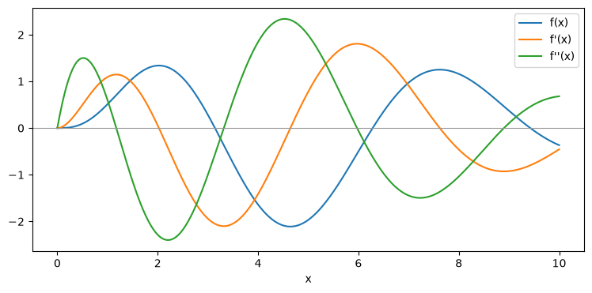
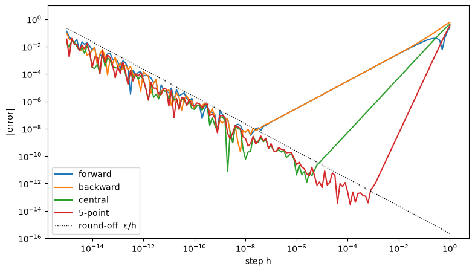
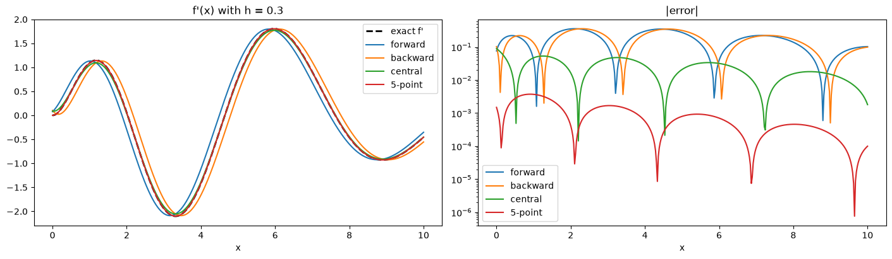

Derivatives on the computer: symbolic differentiation and finite differences#
Given a function \(f\), we want \(f'(x)\). We look at two ways to get it on a computer:
approach |
idea |
result |
Python |
|---|---|---|---|
symbolic |
apply the rules of calculus to a formula |
a formula for \(f'\), exact |
|
finite differences |
evaluate \(f\) at nearby points, take a difference quotient |
a number, with an error |
forward, backward, central, 5-point formulas |
We use the same function in both parts: $\( f(x) = x^2 \sin x \; e^{-x/2}, \qquad x_0 = 1. \)$
The first cell loads the packages. Run it first, then run the notebook from top to bottom: each part defines what it needs just before using it.
import numpy as np
import matplotlib.pyplot as plt
import sympy as sp
Part A. Symbolic differentiation (SymPy)#
SymPy works with expressions, not numbers. sp.diff(f, x) applies the product, quotient and chain rules and returns a new expression.
task |
call |
|---|---|
declare a symbol |
|
first, \(n\)-th derivative |
|
simplify |
|
value at a point |
|
turn into a NumPy function |
|
Step 1: declare the symbol and the function#
x is not a number but a symbol. Any formula built from it with SymPy functions (sp.sin, sp.exp, …) is a SymPy expression.
x = sp.symbols("x")
f_sym = x**2 * sp.sin(x) * sp.exp(-x/2)
f_sym
Step 2: differentiate#
df_sym = sp.diff(f_sym, x) # f'
d2f_sym = sp.diff(f_sym, x, 2) # f''
print("f' =", df_sym)
print("f'' =", sp.simplify(d2f_sym))
print()
print("f'(1) exact :", df_sym.subs(x, 1))
print("f'(1) numeric:", float(df_sym.subs(x, 1)))
f' = -x**2*exp(-x/2)*sin(x)/2 + x**2*exp(-x/2)*cos(x) + 2*x*exp(-x/2)*sin(x)
f'' = (-3*x**2*sin(x)/4 - x**2*cos(x) - 2*x*sin(x) + 4*x*cos(x) + 2*sin(x))*exp(-x/2)
f'(1) exact : exp(-1/2)*cos(1) + 3*exp(-1/2)*sin(1)/2
f'(1) numeric: 1.093276841339319
To plot, or to evaluate at many points, turn the expressions into NumPy functions with lambdify.
f_np = sp.lambdify(x, f_sym, "numpy")
df_np = sp.lambdify(x, df_sym, "numpy")
d2f_np = sp.lambdify(x, d2f_sym, "numpy")
xx = np.linspace(0, 10, 400)
fig, ax = plt.subplots(figsize=(9, 4))
ax.plot(xx, f_np(xx), label="f(x)")
ax.plot(xx, df_np(xx), label="f'(x)")
ax.plot(xx, d2f_np(xx), label="f''(x)")
ax.axhline(0, color="0.6", lw=0.8)
ax.set_xlabel("x"); ax.legend()
plt.show()
exact = float(df_sym.subs(x, 1)) # exact f'(1): the reference for Part B

Symbolic differentiation gives an exact formula.
It needs a formula for \(f\).
We use it below as the exact reference for the finite differences.
Part B. Finite differences#
Now we forget the formula and only evaluate \(f\) at a few points. All formulas below come from Taylor’s theorem: $\( f(x \pm h) = f(x) \pm h f'(x) + \tfrac{h^2}{2} f''(x) \pm \tfrac{h^3}{6} f'''(x) + \dots \)$
Step 1: the function as a NumPy function#
For finite differences we need a function that takes numbers (or NumPy arrays) and returns numbers. It is the same \(f\), written with np.sin and np.exp instead of sp.sin and sp.exp.
def f(x):
return x**2 * np.sin(x) * np.exp(-x/2)
print("f(1) =", f(1.0))
f(1) = 0.5103779515445728
Step 2: forward difference#
Keep the first two terms of \(f(x+h) = f(x) + h f'(x) + \tfrac{h^2}{2} f''(x) + \dots\) and solve for \(f'(x)\): $\( f'(x) \approx \frac{f(x+h) - f(x)}{h}, \qquad \text{error} \approx \frac{h}{2} f''(x) = O(h). \)$
Each formula is a function of f, the point x and the step h; we check it at \(x = 1\) with \(h = 0.1\).
def forward(f, x, h):
return (f(x + h) - f(x)) / h
print("forward, h = 0.1:", forward(f, 1.0, 0.1), " error:", abs(forward(f, 1.0, 0.1) - exact))
forward, h = 0.1: 1.117821685059659 error: 0.024544843720339937
Step 3: backward difference#
The same with \(f(x-h) = f(x) - h f'(x) + \tfrac{h^2}{2} f''(x) - \dots\): $\( f'(x) \approx \frac{f(x) - f(x-h)}{h}, \qquad \text{error} \approx -\frac{h}{2} f''(x) = O(h). \)$
About the same size of error as forward, but with the opposite sign.
def backward(f, x, h):
return (f(x) - f(x - h)) / h
print("backward, h = 0.1:", backward(f, 1.0, 0.1), " error:", abs(backward(f, 1.0, 0.1) - exact))
backward, h = 0.1: 1.0580620704846455 error: 0.035214770854673505
Step 4: central difference#
Subtract the two Taylor series: the \(f(x)\) and \(f''\) terms cancel, $\( f(x+h) - f(x-h) = 2h f'(x) + \tfrac{h^3}{3} f'''(x) + \dots \)\( \)\( f'(x) \approx \frac{f(x+h) - f(x-h)}{2h}, \qquad \text{error} \approx \frac{h^2}{6} f'''(x) = O(h^2). \)$
It is the average of forward and backward: their errors cancel.
def central(f, x, h):
return (f(x + h) - f(x - h)) / (2*h)
print("central, h = 0.1:", central(f, 1.0, 0.1), " error:", abs(central(f, 1.0, 0.1) - exact))
central, h = 0.1: 1.0879418777721521 error: 0.005334963567166895
Step 5: 5-point (fourth-order) central difference#
Combine central differences with steps \(h\) and \(2h\) so that the \(h^2\) error terms cancel too: $\( f'(x) \approx \frac{-f(x+2h) + 8f(x+h) - 8f(x-h) + f(x-2h)}{12h}, \qquad \text{error} = O(h^4). \)$
def five_point(f, x, h):
return (-f(x + 2*h) + 8*f(x + h) - 8*f(x - h) + f(x - 2*h)) / (12*h)
print("5-point, h = 0.1:", five_point(f, 1.0, 0.1), " error:", abs(five_point(f, 1.0, 0.1) - exact))
5-point, h = 0.1: 1.0932301850886785 error: 4.665625064048662e-05
Step 6: summary, and a list to loop over#
name |
formula |
error |
|---|---|---|
forward |
\(\dfrac{f(x+h) - f(x)}{h}\) |
\(O(h)\) |
backward |
\(\dfrac{f(x) - f(x-h)}{h}\) |
\(O(h)\) |
central |
\(\dfrac{f(x+h) - f(x-h)}{2h}\) |
\(O(h^2)\) |
5-point |
\(\dfrac{-f(x+2h) + 8f(x+h) - 8f(x-h) + f(x-2h)}{12h}\) |
\(O(h^4)\) |
\(O(h^p)\) means: halve \(h\) and the error is divided by \(2^p\).
In Python a function is an object like any other, so we can put the four functions in a list and loop over them, with a second list holding their names.
fd_names = ["forward", "backward", "central", "5-point"]
fd_methods = [forward, backward, central, five_point]
for name, D in zip(fd_names, fd_methods):
print(f"{name:9s} h = 0.1: error = {abs(D(f, 1.0, 0.1) - exact):.2e}")
forward h = 0.1: error = 2.45e-02
backward h = 0.1: error = 3.52e-02
central h = 0.1: error = 5.33e-03
5-point h = 0.1: error = 4.67e-05
Example 1: the error at \(x_0 = 1\) for several step sizes#
x0 = 1.0
print(f"exact f'(1) = {exact:.15f}\n")
print(f"{'h':>8s}" + "".join(f"{name:>12s}" for name in fd_names))
for h in [1e-1, 1e-2, 1e-3, 1e-4, 1e-6, 1e-8, 1e-10, 1e-12]:
print(f"{h:8.0e}" + "".join(f"{abs(D(f, x0, h) - exact):12.2e}" for D in fd_methods))
exact f'(1) = 1.093276841339319
h forward backward central 5-point
1e-01 2.45e-02 3.52e-02 5.33e-03 4.67e-05
1e-02 2.95e-03 3.06e-03 5.35e-05 4.68e-09
1e-03 3.00e-04 3.01e-04 5.35e-07 5.76e-13
1e-04 3.00e-05 3.00e-05 5.35e-09 2.29e-13
1e-06 3.00e-07 3.00e-07 4.12e-12 2.36e-11
1e-08 5.49e-09 5.61e-09 5.96e-11 1.91e-09
1e-10 2.61e-07 2.61e-07 2.61e-07 4.46e-07
1e-12 7.08e-05 1.51e-04 4.02e-05 4.02e-05
Example 2: error against \(h\) on a log-log plot#
hs = np.logspace(-15, 0, 151)
fig, ax = plt.subplots(figsize=(9, 5))
for name, D in zip(fd_names, fd_methods):
ax.loglog(hs, np.abs(D(f, x0, hs) - exact) + 1e-20, label=name)
ax.loglog(hs, 2.2e-16 / hs, "k:", lw=1, label="round-off ε/h")
ax.set_xlabel("step h"); ax.set_ylabel("|error|")
ax.set_ylim(1e-16, 1e1); ax.legend()
plt.show()

Right side (large \(h\)): truncation error. It falls with slope 1 (forward, backward), 2 (central) and 4 (5-point). Forward and backward are equally good; central and 5-point are much better.
Left side (small \(h\)): round-off error. \(f(x+h)\) and \(f(x)\) are almost equal, so their difference loses digits; dividing by a tiny \(h\) makes it worse. This error grows like \(\varepsilon / h\), \(\varepsilon \approx 2.2\times10^{-16}\).
Together: as \(h\) gets smaller, the error first goes down (less truncation error) and then goes up again (more round-off error). Each curve is V-shaped, so each formula has a best step size \(h\) at the bottom of its V. Making \(h\) smaller than that only makes the result worse.
Read off from the plot above (\(f\) at \(x_0 = 1\)):
formula |
best \(h\) |
best error |
|---|---|---|
forward, backward |
\(\approx 10^{-8}\) |
\(\approx 10^{-8}\) |
central |
\(\approx 10^{-5}\) |
\(\approx 10^{-11}\) |
5-point |
\(\approx 10^{-3}\) |
\(\approx 10^{-13}\) |
Example 3: the derivative on a whole interval#
The formulas work with NumPy arrays, so we can compute \(f'\) at many points at once.
h = 0.3 # a large h, to make the differences visible
fig, axs = plt.subplots(1, 2, figsize=(14, 4), constrained_layout=True)
axs[0].plot(xx, df_np(xx), "k--", lw=2, label="exact f'")
for name, D in zip(fd_names, fd_methods):
axs[0].plot(xx, D(f, xx, h), label=name)
axs[1].semilogy(xx, np.abs(D(f, xx, h) - df_np(xx)) + 1e-20, label=name)
axs[0].set_title(f"f'(x) with h = {h}"); axs[0].legend()
axs[1].set_title("|error|"); axs[1].legend()
for ax in axs: ax.set_xlabel("x")
plt.show()

With \(h = 0.3\) forward and backward are visibly shifted (to opposite sides), central is close, 5-point is on top of the exact curve.
Finite differences only need values of \(f\), not a formula. But they are never exact, and you must choose \(h\).
Comparison at \(x_0 = 1\)#
names = ["symbolic (SymPy)", "forward, h=1e-8", "backward, h=1e-8", "central, h=1e-5",
"5-point, h=1e-3"]
values = [exact, forward(f, 1.0, 1e-8), backward(f, 1.0, 1e-8), central(f, 1.0, 1e-5),
five_point(f, 1.0, 1e-3)]
print(f"{'method':18s} {'derivative':>20s} {'error':>10s}")
for name, v in zip(names, values):
print(f"{name:18s} {v:20.15f} {abs(v - exact):10.1e}")
method derivative error
symbolic (SymPy) 1.093276841339319 0.0e+00
forward, h=1e-8 1.093276846830804 5.5e-09
backward, h=1e-8 1.093276835728574 5.6e-09
central, h=1e-5 1.093276841285240 5.4e-11
5-point, h=1e-3 1.093276841338743 5.8e-13
symbolic (SymPy) |
finite differences |
|
|---|---|---|
needs |
a formula |
values of \(f\) |
result |
exact formula |
approximate number |
choose a step \(h\)? |
no |
yes: too large = truncation error, too small = round-off |
Use a central difference to check a derivative you computed in another way (by hand or with SymPy).
Exercises#
In each exercise use both approaches. Write each function twice (a SymPy expression and a NumPy function), as in Parts A and B.
Syntax
task |
call |
|---|---|
symbol, derivative, \(n\)-th derivative |
|
zero of an expression near a guess |
|
expression \(\to\) NumPy function |
|
finite differences |
|
\(\ln u\) |
SymPy: |
\(\sqrt{u}\) |
SymPy: |
\(\cos u\) |
SymPy: |
log-log plot |
|
Exercise 1. Let $\( f(x) = \frac{\ln(1 + x^2)}{1 + x}. \)$
(a) Symbolic. Compute \(f'\) and \(f''\) with SymPy. Plot \(f\) and \(f'\) on \([0, 5]\) (use lambdify). Find the maximum of \(f\) on \([0, 5]\) by solving \(f'(x) = 0\) with sp.nsolve (start from a guess read off the plot), and check that \(f'' < 0\) there.
(b) Finite differences. At \(x = 1\), compute the forward, backward, central and 5-point approximations of \(f'(1)\) for \(h = 10^{-1}, 10^{-2}, \dots, 10^{-15}\). Plot the four errors against \(h\) on a log-log plot (use the exact value from (a)). Read off the best \(h\) and the smallest error for each formula.
# Exercise 1
Exercise 2. Let $\( f(x) = \sqrt{1 + x^2}\,\cos(3x) \quad \text{on } [-2, 2]. \)$
(a) Symbolic. Compute \(f'\) with SymPy and turn it into a NumPy function with lambdify.
(b) Finite differences. On 200 points of \([-2, 2]\) compute \(f'\) with the four formulas, once with \(h = 0.1\) and once with \(h = 10^{-3}\). Plot the errors against \(x\) (log scale on the \(y\)-axis), using (a) as the exact derivative. Which formula is best, and by how much does each error drop when \(h\) goes from \(0.1\) to \(10^{-3}\)? Does this agree with the orders \(O(h)\), \(O(h^2)\), \(O(h^4)\)?
(c) Best step size. At \(x = 0.5\), compute the error of the central and the 5-point formulas for \(h = 10^{-1}, 10^{-2}, \dots, 10^{-15}\) and plot both against \(h\) on a log-log plot. Read off the best \(h\) and the smallest error for each, and compare with the table in Part B.
# Exercise 2